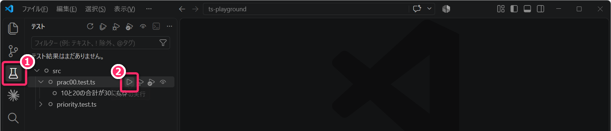
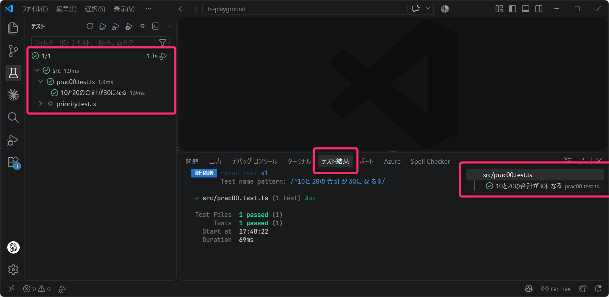
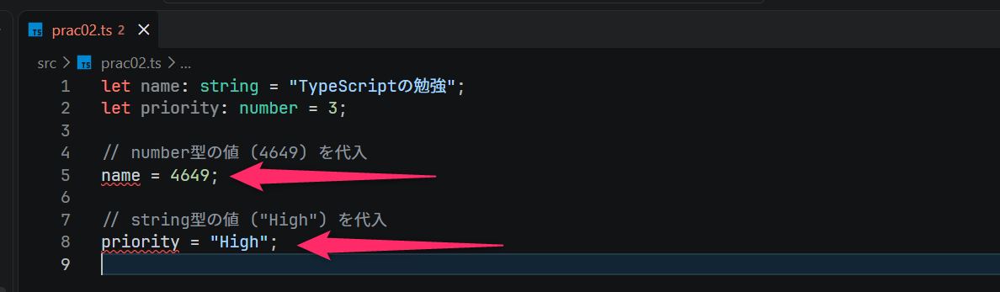
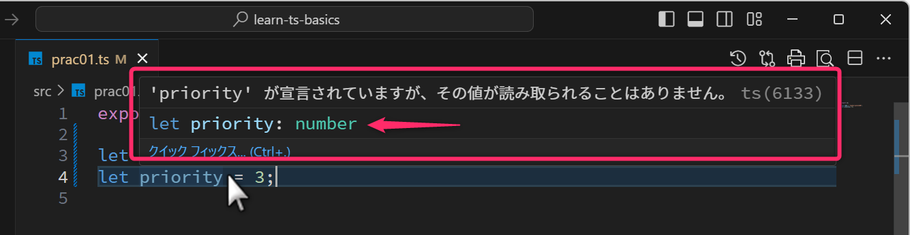
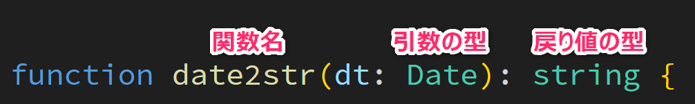
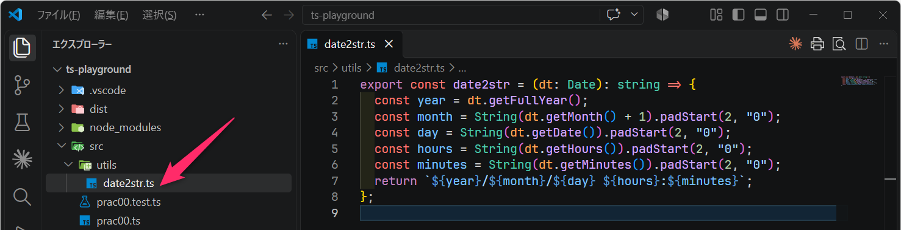
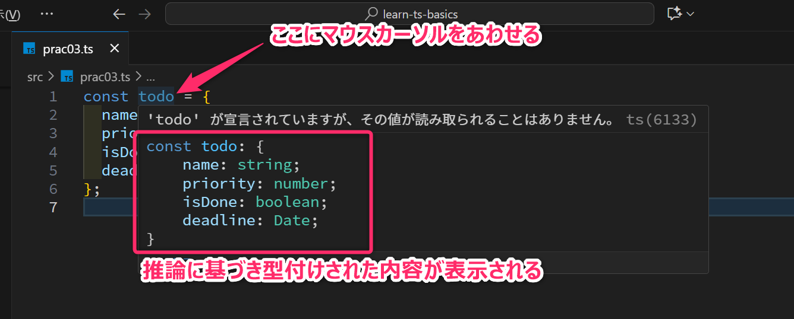
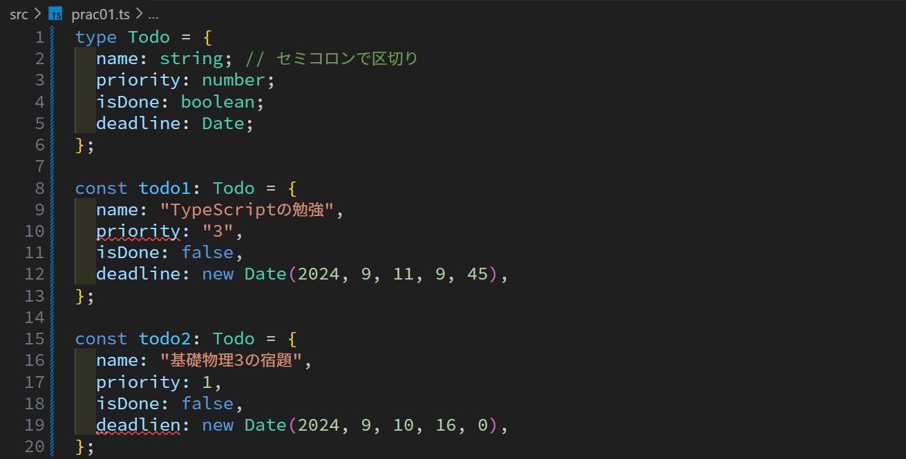
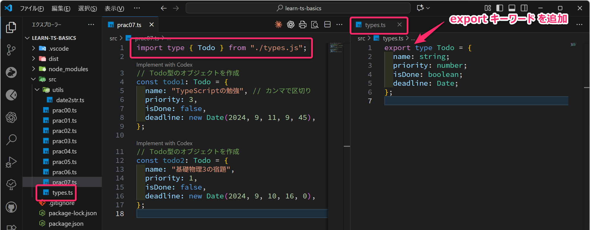
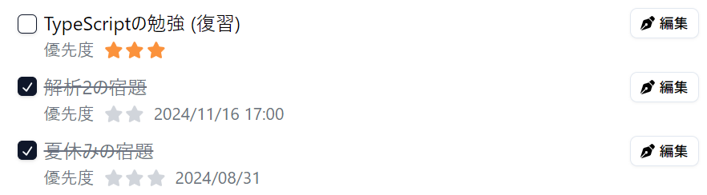

1 今回の授業概要と連絡
本科目は学修単位科目です。大学の授業と同様に 1回の授業あたり4時間相当の授業時間外学習 を前提としたボリューム、展開速度となっています。いろいろと忙しいとは思いますが、時間を確保して取り組んでください。
1.1 小テスト1
「小テスト1」を実施します。
1.2 ここまでの流れ
後期中間試験ぐらいまでの授業の流れ (予定)
- モダンTypeScript基礎学習のための環境構築 済
- TypeScript基礎学習 ← 今回と次回の授業のメイン
- React / Next.js 開発に関連する文法や機能だけを集中的に学びます。
- React を用いた「Todoアプリ」開発のための環境構築
- Todoアプリの設計・実装 (Reactによるフロントエンド) のチュートリアル
- Todoアプリのカスタマイズや作り込み → 📝後期前半の大課題
まずは、しばらく、次のような「Todoアプリ」を開発することを目標として授業が展開します。
- Todoアプリのサンプル (チュートリアルそのままに近いもの)
- Todoアプリのサンプル (内容を理解して機能追加やカスタマイズされたもの)
2 前回の復習
第01回講義の重要部分の「復習」と「プラスアルファの解説」をしていきます。
2.1 プログラムの実行
前回作成した ts-playground フォルダを VSCode で開いてください。
今回も、特に断りがない限り、コマンドはプロジェクトフォルダのルート (=
package.json ゆや tsconfig.json
などのファイルが配置されている最上位階層) で実行してください。
プロジェクトに src/prac00.ts のような TypeScript
ファイルがあるとき、ターミナル (VSCodeでは [Ctrl]+[J] でオープン)
から、次のようなコマンドを入力して、プログラムを実行することができました。
npx tsx src/prac00.tsまた、.vscode/tasks.json
が適切に設定されていれば、当該ファイルのタブがアクティブな状態で
[Ctrl]+[Shift]+[B] というショートカットでもプログラムの実行できました。
- 実際に、前回作成したプログラム (
src/prac00.tsなど) が、問題なく実行できることを確認してください。
また、次のようなコマンドで「型チェック」と「テストの実行」ができました。
npm run typecheck
npm run test:run -- src/prac00.test.ts2.1.1 実行確認1
npm run typecheck コマンドは、tsconfig.json の
include の項目で指定された "src/**/*.ts"
にマッチするすべてのファイルを対象に型チェックを実行します。
型に関する問題がなければ、以下のように何も表示されません。
PS C:\Users\xxxx\ts-playground> npm run typecheck
> ts-playground@1.0.0 typecheck
> tsc --noEmit問題があるときは、以下のようにタイプエラーとなる箇所と内容が出力されます。
PS C:\Users\xxxx\ts-playground> npm run typecheck
> ts-playground@1.0.0 typecheck
> tsc --noEmit
src/prac00.ts:7:7 - error TS2322: Type 'number' is not assignable to type 'string'.
7 const x: string = 10;
~
src/prac00.ts:10:52 - error TS2345: Argument of type 'string' is not assignable to parameter of type 'number'.
10 const result: string = greetAndCalculate(userName, x, y);2.1.2 実行確認2
npm run test:run -- src/prac00.test.ts コマンドは、Vitest
というソフトウェアテストツールを使用して、src/prac00.test.ts
に記述されているテストコードを実行します。
テストをパス (合格) した場合は、以下のような表示 (グリーン) となります。
PS C:\Users\xxxx\ts-playground> npm run test:run -- src/prac00.test.ts
> ts-playground@1.0.0 test:run
> vitest run src/prac00.test.ts
RUN v5.0.1 C:/Users/xxxx/ts-playground
✓ src/prac00.test.ts (1 test) 6ms
✓ 10と20の合計が30になる 3ms
Test Files 1 passed (1)
Tests 1 passed (1)
Start at 17:31:48
Duration 614ms (transform 43%, import 35%, worker 17%, tests 5%)また、VSCode の Vitest の拡張機能 からもテストが実行できます。


2.1.3 定着確認
- package.json の scripts に
"typecheck": "tsc --noEmit"と登録されているプロジェクトにおいて、JavaScript ファイルを生成せずに、TypeScript ファイル「型チェック」だけを行なうコマンドを答えよ。- 答え:
npm run typecheck
- 答え:
- package.json scripts に
"test:run": "vitest run"と登録されているプロジェクトにおいて、src/priority.test.ts のテストだけを1回実行するコマンドを答えよ。- 答え:
npm run test:run -- src/priority.test.ts
- 答え:
- コマンド
npx tsx src/prac01.tsを実行して正常終了すれば、型チェックもテストも成功したと判断できる。この説明は「適切」か「不適切」か答えよ。- 答え: 不適切。プログラムの実行、型チェック、テストは別の確認である。
2.2 静的型付け
前回講義では「TypeScript
は『静的型付け言語』であり、実行前に型の整合性を確認できる」と解説しました。変数の型を明示するときは、次のように変数名のあとにコロン
(:) と型 (string や number) を記述します。
この : string や : number のような記述を 型注釈 (Type
Annotation) と呼びます。
型注釈を省略しても型を推論できる場合がありますが、まずは型注釈を付けた例で復習していきます。
let name: string = "TypeScriptの勉強"; // : string で 文字列型を明示
let priority: number = 3; // : number で 数値型を明示ここで「変数に静的な型付けがされる」とは、(簡単に言えば) 変数宣言後、その変数には宣言時に示した型以外の値を (基本的には) 代入できない ように制約がかかるということになります。
例えば、name: string = ... のように変数宣言された name には
文字列型 (string 型) 以外の値を入れることはできず 、また、同様に
priority には数値型 (number 型)
以外の値を入れることはできないという制約がかかります。
プロンプト例
静的型付け言語って、何がうれしいのですか？変数に指定の型しか格納できないような制約は不便ではないですか？
2.2.1 演習 (型エラーが検出されているときの詳細確認)
VSCode で src/prac02.ts を新規作成し、以下のコード
(＝型に関する問題があるコード) を貼付けてください。
let name: string = "TypeScriptの勉強";
let priority: number = 3;
// number型の値 (4649) を代入
name = 4649;
// string型の値 ("High") を代入
priority = "High";すると、VSCode 上で 第05行目 と 第08行目 に、次のようにエラーを示す赤色の波下線がつくことを確認してください。

また、「赤波線」にカーソルを重ねると、以下のようなメッセージが表示されることを確認して下さい。
型 ‘number’ を型 ‘string’ に割り当てることはできません。
つづいて、VSCode のターミナルから npm run typecheck を実行し、以下のように
型エラー (タイプエラー) が検出されること を確認してください。
PS C:\Users\xxxx\ts-playground> npm run typecheck
> ts-playground@1.0.0 typecheck
> tsc --noEmit
src/prac02.ts:5:1 - error TS2322: Type 'number' is not assignable to type 'string'.
5 name = 4649;
~~~~
src/prac02.ts:8:1 - error TS2322: Type 'string' is not assignable to type 'number'.
8 priority = "High";
~~~~~~~~
Found 2 errors in the same file, starting at: src/prac02.ts:5プロンプト例
tsc --noEmitを実行したときに出力されるerror TS2322: Type 'number' is not assignable to type 'string'.の「TS2322」ってなんですか？
npm run typecheck
コマンドで型エラーが検出されることを確認できたら、src/prac02.ts の
第05行目と第08行目の代入文をコメントアウトして下さい。そして、再度
npm run typecheck
を実行して、型エラーが検出されなくなることを確認して下さい。
現在の設計では src 内の全ての TypeScript ファイル を型チェックするように設定しているので、意図的に作ったエラーを残してくると、以降の演習の型チェックにも影響してしまいます。
なお、TypeScript / JavaScript では、慣例的に「変数名」や「ローカルな定数名」は キャメルケース (小文字はじまり) で命名することを原則とするので覚えておいてください。
プロンプト例
TypeScriptで
const name: string = 320;と書くと、tsc --noEmitによる型チェックは失敗するのに、tsxは問題なく実行できました。型注釈は実行時にどのように扱われるのですか？Python や C言語 との違いも交えて説明してください。
Python や JavaScript は「動的型付け言語」
プログラミング1で学んだ Python や JavaScript は「動的型付け言語」であり、次のようなコードを記述しても問題ありません。
C/C++言語は「静的型付け言語」なので、上記のようなプログラムはコンパイルエラーとなります。
代表的な命名規則
プログラムでは、変数名や関数名、クラス名などに複数の単語を組み合わせることがあります。その際、単語の区切り方 にはいくつか代表的な命名規則があります。
- 「キャメルケース（camelCase）」とは、先頭の単語を小文字で始め、2語目以降の先頭を大文字にする命名規則です。
- 例:
newName、isDone、studentCount - JavaScript や TypeScript では、変数名や関数名などでよく利用されます。
- 例:
- 「パスカルケース（PascalCase）」とは、すべての単語の先頭を大文字にする命名規則です。
- 例:
NewName、IsDone、StudentList - JavaScript や TypeScript では、クラス名や React のコンポーネント名などでよく利用されます。
- 例:
- 「スネークケース（snake_case）」とは、単語の間をアンダースコア（
_）で区切る命名規則です。- 例:
new_name、is_done、student_count - Python では、変数名や関数名などでよく利用されます。
- 例:
このほか、NEW_NAME
のように大文字とアンダースコアを組み合わせる書き方もあります。定数名などで利用されることがあります。
使用する命名規則は、プログラミング言語やライブラリ、開発チームなどによって変わってきます。どの規則が絶対に正しいというものではなく、その環境で一般的に使われている命名規則 に従い、同じ種類の名前では書き方を統一することが重要となります。
TypeScriptの主要な「型」としては、次のようなものがあります。なお、null と
undefined については、あとの授業で扱います。
string: 文字列型。number: 数値型。「整数型」と「浮動小数点型」 の区別はありません。boolean: 真偽値型 (ブール型)。trueとfalseの2値だけを扱います。- Python では
TrueとFalseのように真偽値のリテラルは大文字開始 でしたが、TypeScript では 先頭が小文字 になることに注意してください。
- Python では
Date: 日時型。厳密には TypeScript / JavaScript の 組込みクラス であるDateのインスタンス (オブジェクト) の型で「日付」と「時刻」を扱うときに使用します。
2.2.2 定着確認
TypeScript において、
let name: string = "TypeScript の勉強";の: stringのように、型を明示する記述の名称を答えよ。- 答え 型注釈 (Type Annotation)
TypeScriptにおいて「真偽値」を扱う型の名称を答えよ。プログラム内の表記形式で答えること。
- 答え
boolean
- 答え
TypeScriptにおいて「文字列」を扱う型の名称を答えよ。プログラム内の表記形式で答えること。
- 答え
string
- 答え
TypeScriptにおいて、浮動小数点数や整数を扱う型を答えよ。プログラム内の表記形式で答えること。
- 答え
number
- 答え
TypeScript / JavaScript において、「変数名」や「ローカルな定数名」の表記は慣例的に ( ) が使用される。括弧ににあてはまる語として最も適切なのは「キャメルケース」「パスカルケース」「スネークケース」「ハンガリアン記法」のうち、どれか。
- 答え キャメルケース
TypeScript において、
let isDone: ??? = false;の???に入る型名を答えよ。- 答え
boolean
- 答え
TypeScript において、
let message: ??? = "false";の???に入る型名を答えよ。- 答え
string。引用符で囲まれた"false"は文字列であり、真偽値のfalseとは異なる。
- 答え
TypeScript において、整数値の
3と小数 (浮動小数点数) の3.5を扱うとき、それらに適した型名をそれぞれ答えよ。- 答え どちらも
number。整数と浮動小数点数で型名を分けない。
- 答え どちらも
TypeScript で「真偽値型の変数を初期化する記述」として適切な選択肢を選択せよ。答え: C
- A:
let isDone: boolean = False; - B:
let isDone: boolean = "false"; - C:
let isDone: boolean = false; - D:
let isDone: boolean = 0;
- A:
TypeScript で、日時を扱う変数を
let deadline: ??? = new Date(2026, 9, 2, 14, 15);と宣言する。???に入る型名を答えよ。- 答え
Date。先頭のDは大文字。
- 答え
「student」と「count」を組み合わせ、キャメルケースで変数名を記述せよ。
- 答え
studentCount
- 答え
「student」と「list」を組み合わせ、パスカルケースで名前を記述せよ。
- 答え
StudentList
- 答え
「student」と「count」を組み合わせ、スネークケースで変数名を記述せよ。
- 答え
student_count
- 答え
命名規則についての説明として、適切な選択肢を選択せよ。答え: B
- A: どの言語でも、変数名には必ずキャメルケースを使う。
- B: その言語や開発チームで一般的な規則に従い、同じ種類の名前では書き方を統一する。
- C: 同じプロジェクトの変数名でも、キャメルケースとスネークケースを自由に混ぜる。
2.3 型推論
ここまでの例では型を明示してきましたが、TypeScriptには 型推論 (Type Inference) という機能があります。型を記述しなくても、初期値などから型を推論 (推測) して静的な型を決める ことができます。型の記述を省略することと、型の検査をしなくなることは別です。
例えば、以下の TypeScript プログラムでは、変数に : string や
: number を明示的に指定していません。それでも問題なくトランスパイルでき、VS Code
のエディタにもエラーは表示されません。これは、TypeScript
が初期値をもとに変数の型を自動的に判断するためです。例えば、name は
"TypeScriptの勉強" という初期値から string
型であると推論されます。同様に、priority は数値の初期値から
number 型であると推論されます。
各変数が「推論によって、どのように型付けされているか」は、VSCodeで以下のように 変数にカーソルを合わせること で確認できます。

一方、以下のように typeof name と記述すると、JavaScript の
typeof 演算子による実行時の型判定結果
を文字列として取得できます。例えば、文字列に対しては "string"、数値に対しては
"number" が返されます。
なお、typeof は関数ではなく単項演算子なので、通常は typeof name
のように括弧を付けずに記述します。typeof(name)
と書くこともできますが、この括弧は関数呼び出しを意味するものではありません。
let name = "TypeScriptの勉強";
let priority = 3;
console.log(`name の型は ${typeof name} です`);
console.log(`priority の型は ${typeof priority} です`);型推論は関数の戻り値などにも働きます。ただし、型を推論できる情報が十分にない場合は、明示する必要があります。この授業では、関数が何を受け取り、何を返すかを意識する練習として、関数の引数と戻り値の型は基本的に明記していきます。
中級者向け
typeof で得られる結果は、TypeScript
がコンパイル時に推論・検査する静的な型そのものではありません。「TypeScript
の静的型」と「JavaScript の typeof
が実行時に返す分類」は別のものとして区別してください。
TypeScript の型情報は、主にプログラムを実行する前の型チェックに利用されます。一方、typeof は JavaScript の演算子であり、プログラムの実行時に、その時点の値を一定の規則で分類した結果を返します。
例えば、TypeScript 上では配列に string[]
という型を付けることができますが、実行時に typeof を適用すると
"object"
が返されます。このように、両者は一対一に対応するものではないことに注意してください。
2.3.1 定着確認
- TypeScript において、
let hoge = 3;と宣言した変数の実行時の値の種類をコンソール出力したい。`console.log(`変数 hoge の型は ${???} です`);`の???に記述すべき適切な語を答えよ。- 答え
typeof hoge
- 答え
- TypeScript において、
let name = "React の予習";のように型注釈を省略しても、初期値などから型を自動的に判断する機能の名称を答えよ。- 答え 型推論 (Type Inference)
- TypeScript
において、
let name = "React の予習";、let priority = 3;、let isDone = false;と宣言した。それぞれの変数について、推論される型名を答えよ。- 答え
nameはstring、priorityはnumber、isDoneはboolean。
- 答え
- TypeScript において、
let priority = 3;と宣言した後、priority = "High";と記述した。この代入について適切な選択肢を選択せよ。- A: 型注釈がないので、型チェックでは問題が検出されない。
- B:
priorityはnumber型と推論されるので、文字列の代入は型エラーとなる。 - C: 代入した値に合わせて、
priorityの静的な型がstringに変わる。 - 答え B。型注釈を省略しても、型の検査がなくなるわけではない。
- 「TypeScript で型注釈を省略すると、JavaScript
と同様にコンパイル時の型チェックを受けなくなる」。この説明は適切か、不適切か。
- 答え 不適切。型注釈を省略しても、TypeScript が型を推論し、その型に基づいて型チェックが行われる。
- VSCode で TypeScript の変数
let priority = 3;の静的な型を確認したい。エディタ上でどのような操作をすればよいか答えよ。- 答え 変数名
priorityにカーソルを合わせ、表示される型情報を確認する。
- 答え 変数名
- TypeScript において、
let name = "React の予習";と宣言した。typeof nameが返す値を、文字列リテラルの形式で答えよ。- 答え
"string"
- 答え
- TypeScript において、
let priority = 3;と宣言した。typeof priorityを評価したとき、①得られる値、②その値自身の型を答えよ。- 答え ①
"number"、②string（文字列型）。
- 答え ①
- JavaScript の
typeofについて、適切な選択肢を選択せよ。- A: 関数なので、必ず
typeof(name)と記述する。 - B: 演算子なので、
typeof nameと記述できる。typeof(name)と書いても、関数呼び出しではない。 - C: TypeScript だけで利用できる型チェック専用の命令 (文) である。
- 答え B
- A: 関数なので、必ず
- TypeScript の型推論・型チェックと、JavaScript の
typeofが値を分類するタイミングを、それぞれ答えよ。- 答え 型推論・型チェックはプログラムの実行前。
typeofによる値の分類はプログラムの実行時。
- 答え 型推論・型チェックはプログラムの実行前。
2.4 関数とテストの読み方
この先は、処理を関数にまとめて、その戻り値を Vitest を使用して確認していきます。その準備として、前回講義 で記述した src/priority.ts の「完成状態」を見直してください。
export function isValidPriority(value: number): boolean {
return Number.isInteger(value) && value >= 1 && value <= 3;
}PythonやC言語と同様に、関数は「引数を受け取って処理し、戻り値を返す」という単位で考えます。この例の読み方は次のとおりです。
function isValidPriority: 関数の名前を定義する。Python のdefに相当するのがfunctionです。(value: number): 数値を1個受け取り、関数のなかではvalueという名前で使う。: boolean: 戻り値は真偽値。戻り値の型は 引数の丸括弧を閉じたあと に書きます。return ...: 計算した値を呼び出した側へ返す。画面やコンソールに表示する命令ではありません。export: 別のファイルからこの関数を読み込めるようにする。
前回講義では src/priority.test.ts に、次のようなテストコードを記述しました。
import { expect, test } from "vitest";
import { isValidPriority } from "./priority.js";
test("優先度2は有効", () => {
expect(isValidPriority(2)).toBe(true);
});
test("下限の1は有効", () => {
expect(isValidPriority(1)).toBe(true);
});
test("上限の3は有効", () => {
expect(isValidPriority(3)).toBe(true);
});
test("下限より小さい0は無効", () => {
expect(isValidPriority(0)).toBe(false);
});
test("上限より大きい4は無効", () => {
expect(isValidPriority(4)).toBe(false);
});
test("範囲内でも小数の1.5は無効", () => {
expect(isValidPriority(1.5)).toBe(false);
});ここで、第05行目の isValidPriority(2)
が、関数の呼出しで、2 が引数として渡す値です。
expect に渡しているのは 関数から返ってきた値、toBe(true) の true は
仕様から考えた期待値 でした。
また、test の第2引数の () => { ... } も関数です。これは
アロー関数
という書き方で、括弧内に引数がなく、波括弧内にテストするときの処理を書いています。詳しい書き方は後で解説しますが、テストコードでは、この形を繰り返し使います。
2.4.1 演習: テストを追加する
この先、自分で定義した関数の動作を Vitest で確認する場面が何度も出てきます。その準備として、ここでは前回講義で記述した「優先度判定」を題材に、「関数を呼び出し、その戻り値を期待値と比較するソフトウェアテスト」の書き方について復習します。
プロンプト例
ソフトウェア開発の文脈における「テスト」って何ですか？「関数を呼び出し、その戻り値を期待値と比較する」ってどういうことですか？プログラミング初心者にも分かるように解説して下さい。
src/priority.test.ts の末尾に、次の2件の「テストケース」を追加してください。既に同様のテストを書いている場合は、期待値とその理由を照合してください。
test("負の優先度は無効", () => {
expect(isValidPriority(-1)).toBe(false);
});
test("上限より少し大きい小数も無効", () => {
expect(isValidPriority(3.1)).toBe(false);
});変更を保存して型チェックとテストを実行してください。
npm run typecheck
npm run test:run -- src/priority.test.ts前回の 6 件に上記の 2 件だけを追加した場合は、8 件成功 になるはずです。以降、随所で実装とテストを組み合わせて動作を確かめていきます。
2.4.2 定着確認
function isValidPriority(value: number): booleanの「引数の型」と「戻り値の型」を答えよ。- 答え: 引数の型は
number、戻り値の型はboolean
- 答え: 引数の型は
- Vitest の
expect(isValidPriority(0)).toBe(false)について、「テスト対象の関数isValidPriorityに渡す値 (実引数)」と「期待している戻り値」をそれぞれ答えよ。- 答え: 関数に渡す値は
0、期待する戻り値はfalse
- 答え: 関数に渡す値は
- TypeScript
で定義した関数を、別のファイルから読み込めるようにしたい。関数の定義に付けるキーワードを答えよ。
- 答え:
export
- 答え:
- 「優先度は 1〜3 の整数だけを有効とする」という仕様の関数
isValidPriorityを Vitest でテストする。expect(isValidPriority(3.1)).toBe(???);の???に入る期待値を答えよ。- 答え:
false。3.1は上限の3を超えており、整数でもない。
- 答え:
2.5 オブジェクトの初期化
TypeScript / JavaScript では、複数の変数をグループ化して (束ねて) オブジェクト という単位で扱うという解説をしました (参考: 前回の講義 )。ここでの「オブジェクト」とは、既に学習済みの Pythonの「辞書 (またはクラスのインスタンス)」や C言語の「構造体」のようなもの と考えてください。
オブジェクトは、次のような「オブジェクトリテラル記法」で初期化することができました。ここでは、新しいTodoの例として 2026年10月11日 00:45 の期限を設定します。
- src/prac03.ts を新規作成して貼り付け、保存してください。
const todo = {
name: "TypeScriptの勉強",
priority: 3,
isDone: false,
deadline: new Date(2026, 9, 11, 9, 45),
};オブジェクトリテラル記法の注意
オブジェクトリテラルでは、各プロパティ（属性）を キー: 値
の形式で定義し、複数のプロパティを カンマ（,）
で区切ります。
ここで注意したいのは、変数への代入とは書き方が異なることです。代入では
= を使いますが、オブジェクトのプロパティ定義では :
を使います。また、各プロパティは文ではないため、区切りには ; ではなく
, を使います。
学習初期には、次のような記述ミスが非常に多く見られます。
オブジェクトを JSON形式 に変換して整形してコンソール出力するためには console.log(JSON.stringify(todo, null, 2))
のようにすることも前回に学びました。
記述ミスの例を試した場合は、正しいオブジェクトリテラルに戻してから先へ進んでください。なお
console.log(typeof todo) による出力は object となります。
3 前回講義の「演習」の解答例と解説
3.1 問題の確認
前回講義では、src/prac01.ts について、次のような 演習問題 に取り組んでもらいました。ここは第01回の解説なので、日時も前回と同じ2025年の例を使います。
演習2
次のような Date型 (日付・日時型) の変数deadlineを追加して、コンソールメソッドで出力してください。また、dayjsやmomentなどのライブラリを使わずに「2025/10/02 14:15」や「2025年10月02日 14時15分」のようにコンソールに出力する方法について調べてください。
- 前回の演習1では「月 (Month)」に
10を指定して11月になることを確認しましたが、以下は 10月を表す9に修正した状態 です。
上記について、実際に取り組んでもらって、皆さんそれぞれが「自分なりの解決策」を見つけていることを前提に解説していきます。
3.2 解説: 月 (Month) の扱いについて
まず、new Date(2025, 9, 2, 14, 15) の第2引数の 9 は、9月ではなく
10月 を表します。前回の演習で確認した、月の指定方法を思い出してください。
しかし、実際に console.log(deadline)
のように書いてコンソール出力すると、次のような結果になることが確認できたと思います。
2025-10-02T05:15:00.000Z上記のような日時表記は ISO8601形式 とよばれる書式 (フォーマット) となります。私たちの日常生活では登場することは少ないですが、コンピュータやネットの世界ではオーソドックスな日時の表記法になっています。
さらに詳しく結果を考察・確認していきます。
まずは「Month (月)」について 「9月だろう」と推測していたものの出力結果が違った
ことに気づいたでしょうか。TypeScript / JavaScript の Date
クラスの仕様上、第2引数は ゼロオリジン で 0 から 11
によって Month (月) を与えるようになっています
(ややこしいですが、そのような仕様なので仕方がありません)。
では、第2引数に 12 を与えるとどうなるのか (コンパイルエラーになるのか、実行時エラーになるのか、あるいは別の動作をするのか)
を予想したうえで実際に試してみてください。プログラミング1
の授業から、繰り返し伝えていますが、このように発想を広げて自ら検証してみることは非常に大事です。
これから開発しようとしている「Todoアプリ」において、タスクの期限 (deadline) が、1ヵ月ずれて扱われることは致命的なので注意してください。
3.2.1 定着確認
- TypeScript / JavaScript の
Dateクラスでは、月を表す番号を0から数え始める。このように0を起点として数える方式の名称を答えよ。- 答え: ゼロオリジン
new Date(年, 月, 日, 時, 分)の形で、同じ年の 1 月から 12 月を指定するとき、第 2 引数に与える整数の範囲を答えよ。- 答え:
0から11。
- 答え:
- TypeScript / JavaScript で、
new Date(年, 月, 日, 時, 分)の第 2 引数に与える値として、1 月と 12 月を表す値をそれぞれ答えよ。- 答え: 1 月は
0、12 月は11。
- 答え: 1 月は
- TypeScript / JavaScript の
new Date(2025, 9, 2, 14, 15)が、実行環境のローカル時刻として表す年月日を答えよ。- 答え: 2025 年 10 月 2 日。
- TypeScript / JavaScript で、実行環境のローカル時刻として 2025 年 10 月 2 日 14:15
を指定したい。
new Date(2025, ???, 2, 14, 15)の???に入る値を答えよ。- 答え:
9
- 答え:
- TypeScript / JavaScript で、2025 年 10 月 2 日を指定するつもりで
new Date(2025, 10, 2, 14, 15)と記述した。実際に指定される月と、意図した月にするための修正を答えよ。- 答え: 実際には 11 月になる。第 2 引数の
10を9に変更する。
- 答え: 実際には 11 月になる。第 2 引数の
- TypeScript / JavaScript の
new Date(2025, 12, 31, 11, 45)の動作について、適切な選択肢を選択せよ。- A: 月が
0から11の範囲外なので、型チェックでエラーになる。 - B: 月が範囲外なので、実行時にエラーが発生して処理が止まる。
- C: 月の超過分が年に繰り上がり、翌年の日時を表すオブジェクトが作られる。
- 答え: C
- A: 月が
- TypeScript / JavaScript の
new Date(2025, 12, 31, 11, 45)が、実行環境のローカル時刻として表す年月日を答えよ。- 答え: 2026 年 1 月 31 日。月の番号
11が 12 月で、その次の12は翌年の 1 月として扱われる。
- 答え: 2026 年 1 月 31 日。月の番号
2025-10-02T05:15:00.000Zのような日時の表記形式の名称を答えよ。- 答え: ISO 8601 形式。
3.3 解説: 時刻 (タイムゾーン) の扱いについて
次に、「時刻」の扱いについて確認します。
new Date(2025, 9, 2, 14, 15) と記述すると、「14:15」を表す
Date オブジェクトが作られると考えたと思います。実際、この形式では、年・月・日・時・分を
実行環境のローカル時刻 として指定します。
したがって、日本時間 (JST) の環境で実行した場合、「2025年10月2日 14:15（日本時間）」を表す Date オブジェクトが作成されます。
ところが、今回 Node.js で Date オブジェクトを console.log
によって直接出力すると、時刻の部分が 05:15:00.000
と表示されました。予想していた 14:15 から
9時間ずれているように見えます。
これは、Node.js が Date オブジェクトをコンソールに表示する際、UTC（Coordinated Universal Time、協定世界時）に変換した表記を使用するため です。
日本標準時（JST）は、UTC より9時間進んでいるため、「日本時間 (JST) 14:15」は9時間分だけ戻り「UTC 05:15」のようになります。つまり、「日本時間の 14:15」と「UTC の 05:15」は、表し方が異なるだけで同じ瞬間を表しています。
ここで重要なのは、Date オブジェクトの中に「14:15 (JST)」という文字列や、「この時刻は日本時間である」という タイムゾーン情報がそのまま保存されているわけではない という点です。Date オブジェクトは、内部ではある瞬間（時点）を表す数値を保持しています。
その同じ時点を、日本時間 (JST) として表示すれば 14:15、UTC として表示すれば
05:15 になります。
したがって、TypeScript/JavaScript において Date を扱うときは、
- Date オブジェクトを作成するときに、どのタイムゾーンとして解釈されるのか
- Date オブジェクトを表示するときに、どのタイムゾーンで表示されるのか
を分けて考えることが重要となります。
現在の実行環境におけるタイムゾーンを確認する方法
現在の JS / TS の実行環境 (Node.jsやウェブブラウザ) が認識しているタイムゾーンは、次のコードで確認することができます。
const timeZone = Intl.DateTimeFormat().resolvedOptions().timeZone;
console.log(`Timezone: ${timeZone}`);おそらく、皆さんの実行環境では Timezone: Asia/Tokyo
のようにコンソール出力されると思います。
ここでは JS/TSの実行環境によってタイムゾーンが変わること に注意してください。
特にウェブアプリのバックエンドを、クラウドサーバ や Dockerなどのコンテナ
で構築する場合、タイムゾーンは一般に Timezone: UTC
となります。一方で、フロントエンドのタイムゾーンは利用者環境 (OS)
によって違ってくることに注意してください。
3.3.1 定着確認
- 世界の時刻を表す基準として使われる「UTC」の日本語名を答えよ。
- 答え: 協定世界時。
- 日本標準時（JST）は UTC と比べて、何時間進んでいるか、または遅れているか答えよ。
- 答え: 9 時間進んでいる。
- 日本時間（JST）の 2025 年 10 月 2 日 14:15 と同じ瞬間を、UTC の年月日と時刻で表せ。
- 答え: 2025 年 10 月 2 日 05:15（UTC）。
- UTC の 2025 年 10 月 2 日 18:00 と同じ瞬間を、日本時間（JST）の年月日と時刻で表せ。
- 答え: 2025 年 10 月 3 日 03:00（JST）。9 時間進めるため、日付も翌日になる。
- TypeScript / JavaScript の
new Date(2025, 9, 2, 14, 15)において、指定した年月日・時刻がどのように解釈されるか、適切なものを選択せよ。- A: 実行環境のローカル時刻として解釈される。
- B: UTC（協定世界時）の時刻として解釈される。
- 答え: A
- TypeScript / JavaScript の Date
オブジェクトが内部で保持している情報として、最も適切なものを選択せよ。
- A:
"2025/10/02 14:15 JST"のような、年月日・時刻・タイムゾーンを含む文字列。 - B: ある瞬間（時点）を表す数値。
- C: ある瞬間（時点）を表す数値と、その時点のタイムゾーン情報。
- 答え: B。Date オブジェクト自身は、JST や UTC といったタイムゾーン情報を保持しているわけではない。
- A:
- 日本時間（JST）の環境と UTC の環境で、それぞれ
new Date(2025, 9, 2, 14, 15)を実行した。「引数が同じなので、作成される Date オブジェクトは同じ瞬間を表す」。この説明は適切か、不適切か。- 答え: 不適切。引数は実行環境のローカル時刻として解釈されるため、日本時間の 14:15 と UTC の 14:15 は別の瞬間を表す。
3.4 解説: 日時の整形出力
次に、Date型の変数の内容を「YYYY/MM/DD HH:MM」のような形式で整形出力する方法について考えていきます。ただし、まずは 外部ライブラリを使用しない前提 とします。
ウェブ検索を利用して「Date型の日時を整形出力する方法」について探す場合は「JavaScript Date フォーマット」などをキーワードにします。検索キーワードは「TypeScript」ではなく「JavaScript」としたほうが情報のヒット率が高くなります。
TypeScript 固有の内容でなければ「JavaScript」をキーワードに使うことも方法として覚えておいてください。
生成AIを利用して解決を試みる場合は、次のようなプロンプトを記述します。
次に示す TypeScript プログラムに続けて、変数
deadlineの内容を「2025/10/02 14:15」のような形式でコンソールに出力するプログラムを書いてください。実行環境は Node.js、タイムゾーンはAsia/Tokyoを想定し、外部ライブラリは使用しないでください。
```
let deadline: Date = new Date(2025, 9, 2, 14, 15);
console.log(deadline);
```
- プロンプト内にプログラムコードを含める場合は、コード全体を 3連バッククォート（```）で囲んでコードブロックとして示す と、文章とコードの区別が明確になり、生成AIが内容を適切に読み取りやすくなります。また、文章中で変数名やコードの一部を示す場合は、バッククォート（`）で囲んでインラインコードとして記述することを推奨します。
ここでは、生成AIから次のような回答 (コード) が得られたと仮定します。
let deadline: Date = new Date(2025, 9, 2, 14, 15);
const year = deadline.getFullYear();
const month = String(deadline.getMonth() + 1).padStart(2, '0');
const day = String(deadline.getDate()).padStart(2, '0');
const hours = String(deadline.getHours()).padStart(2, '0');
const minutes = String(deadline.getMinutes()).padStart(2, '0');
console.log(`${year}/${month}/${day} ${hours}:${minutes}`);第09行目では、前回学習した テンプレート文字列 が使用されています。提案されたプログラムを実行すると、次のように意図した結果を得ることができます。
2025/10/02 14:15生成AIを利用してプログラムを得た場合は、動作確認だけで終わらせず、そのコードが何をしているのか、なぜ動くのかを理解するように努めてください。「意味はよく分からないけれど、動いているのでOK」では、ソフトウェアエンジニアを目指す人間としてダメダメです。
これは、「旅行プランナー」が AI に旅程を作らせて、路線や乗り換え、所要時間の意味も分からないまま、そのまま顧客に渡すようなものです。通常どおり動くときは問題なくても、トラブルが起きた瞬間に何も判断できません。
例えば、第06行目 では
「
deadline.getHours()メソッドで 値 (number型・ローカルタイムゾーンに基づいた「時」) を得て、それをString()で文字列 (string型) に変換して、さらに文字列のpadStart(2, "0")メソッドで ゼロ埋めの2文字幅 に変換している」
ということを理解し、説明できる必要があります。そのためには、生成AIに「自分の解釈の確認をしてもらったり、不明点を追質問したり、コードを書いて実験したりすること」が必要です。
Python で日時を扱って整形出力するには?
Pythonで、先の prac04.ts と同様のプログラムを書くと次のようになります。
from datetime import datetime # 日時を扱うための datetime ライブラリ
deadline = datetime(2025, 10, 2, 14, 15)
print(deadline.strftime('%Y/%m/%d %H:%M'))実際に実行してみてください ( paiza.io
)。同じ日時を出力するために、月の指定を 9 から
10 に変えていること に気づけたでしょうか。
- Python の
datetimeクラスでは、月 (Month) は1から12の整数で与えて初期化します。1月は1、2月は2、…、12月は12となります。 - JavaScript (TypeScript) の
Dateクラスでは、月 (Month) は0から11の整数で与えて初期化します。1月は0、2月は1、…、12月は11となります。
3.5 解説: 日時の整形出力 (関数化1)
ここまでの内容で、次のようなコードでDate型のオブジェクトを「2025/10/02
14:15」のような形式で出力できることが分かりました。deadline
の変数宣言キーワードを let から const に変更しています。
const deadline: Date = new Date(2025, 9, 2, 14, 15);
const year = deadline.getFullYear();
const month = String(deadline.getMonth() + 1).padStart(2, '0');
const day = String(deadline.getDate()).padStart(2, '0');
const hours = String(deadline.getHours()).padStart(2, '0');
const minutes = String(deadline.getMinutes()).padStart(2, '0');
console.log(`${year}/${month}/${day} ${hours}:${minutes}`);しかし、上記のコードは 再利用性 の面で大きな課題があることに気付くと思います。
例えば、Todo の「作成日時」を createdAt
という変数に格納しておいて
期限 2025/10/02 14:15 (登録日 2025/09/25 09:45)
…のように出力したいとします。
上記のコードに準じて愚直にコードを書くと以下のようになってしまいます。実際にコピペして実行してみてください。
const deadline: Date = new Date(2025, 9, 2, 14, 15);
const createdAt: Date = new Date(2025, 8, 25, 9, 45);
const dlYear = deadline.getFullYear();
const dlMonth = String(deadline.getMonth() + 1).padStart(2, "0");
const dlDay = String(deadline.getDate()).padStart(2, "0");
const dlHours = String(deadline.getHours()).padStart(2, "0");
const dlMinutes = String(deadline.getMinutes()).padStart(2, "0");
const caYear = createdAt.getFullYear();
const caMonth = String(createdAt.getMonth() + 1).padStart(2, "0");
const caDay = String(createdAt.getDate()).padStart(2, "0");
const caHours = String(createdAt.getHours()).padStart(2, "0");
const caMinutes = String(createdAt.getMinutes()).padStart(2, "0");
const str =
`期限 ${dlYear}/${dlMonth}/${dlDay} ${dlHours}:${dlMinutes} ` +
`(登録日 ${caYear}/${caMonth}/${caDay} ${caHours}:${caMinutes})`;
console.log(str);確かに意図する出力は得られますが 保守性 や 再利用性 の面では、あまりにも酷いコード🫠です。既に Python と C言語 を学んできている皆さんであれば、処理の関数化 で解決できることに気付くと思います。
3.6 解説: 日時の整形出力 (関数化2)
Date型のオブジェクトを「引数」として受け取って「YYYY/MM/DD HH:MM」形式の文字列を「戻り値
(返り値)」とする date2str という関数の作成を例に
TypeScriptにおける関数定義の書き方 を学んでいきます。
まず、結論から言えば、以下の 第02行目から第09行目
のように関数 date2str が定義できます。
// 関数の定義
function date2str(dt: Date): string {
const year = dt.getFullYear();
const month = String(dt.getMonth() + 1).padStart(2, "0");
const day = String(dt.getDate()).padStart(2, "0");
const hours = String(dt.getHours()).padStart(2, "0");
const minutes = String(dt.getMinutes()).padStart(2, "0");
return `${year}/${month}/${day} ${hours}:${minutes}`;
}
const deadline: Date = new Date(2025, 9, 2, 14, 15);
const createdAt: Date = new Date(2025, 8, 25, 9, 45);
// 関数の呼出し (テンプレート文字列の内部)
let str = `期限 ${date2str(deadline)} (登録日 ${date2str(createdAt)})`;
console.log(str);特に第02行目の関数定義の部分
function date2str(dt: Date): string { に注目してください。

TypeScriptでは、関数の定義に function キーワードを使用します (Pythonでは def
を使用しました)。そして、丸括弧で囲んで関数内で使用する引数を型付きで与えて、さらに、戻り値の型を記述します。
特に、慣れるまでは「戻り値の型を記述する位置が分かりづらい」ので注意してください。他にも、いくつか関数記述のサンプルを見てみます。
3.7 関数定義の例1
2 個の数値型の引数を受け取って、真偽値型を戻り値とする
comp という関数のシグネチャ (=関数の基本的な情報を定義する部分) は次のようになります。
3.7.1 関数定義の例2
1 個の文字列型の引数を受け取って、戻り値を持たない
printWord という関数のシグネチャは次のようになります。TypeScript
では、慣例的に関数名についても キャメルケース が使われます。
戻り値が「ない」ことは void で表現します。
3.7.2 関数定義の例3
引数を受け取らず、数値型を戻り値とする dice
という関数のシグネチャは次のようになります。
なお、引数がないことを function dice(void): number { ... } のように
void を使って明示することは できません。
3.7.3 定着確認
- TypeScript において、引数を受け取らず、数値型を戻り値とする
diceという関数のシグネチャを、functionキーワードを使って記述せよ。- 答え:
function dice(): number { ... }
- 答え:
- TypeScript において、1 個の数値型の引数 (仮引数を
numとする) を受け取り、文字列型を戻り値とするnum2strという関数のシグネチャを、functionキーワードを使って記述せよ。- 答え:
function num2str(num: number): string { ... }
- 答え:
- TypeScript において、2 個の文字列型の引数 (仮引数を
word1とword2とする) を受け取り、真偽値型を戻り値とするcompという関数のシグネチャを、functionキーワードを使って記述せよ。- 答え:
function comp(word1: string, word2: string): boolean { ... }
- 答え:
- TypeScript において、1 個の Date 型の引数 (仮引数を
birthdayとする) を受け取り、数値型を戻り値とするgetAgeという関数のシグネチャを、functionキーワードを使って記述せよ。- 答え:
function getAge(birthday: Date): number { ... }
- 答え:
3.8 アロー関数
以下のように Vitest のテストでも登場した =>
を使う書き方が、アロー関数 です。
Reactのコードでも繰り返し使うため、この授業では以降、基本的にアロー関数で記述します。まずは、引数と戻り値を持つ普通の関数を書き換えてみます。
先ほどの date2str は、次のようにアロー関数形式に書き換えができます。
実際にアロー関数形式に書き換えて、これまでと同じようにプログラムが動作することを確認してください。
さらに、前回作成した src/priority.ts の isValidPriority
も、次のようにアロー関数形式へ書き換えて「**これまでと同じように動作すること」を確認してみてください。
export const isValidPriority = (value: number): boolean => {
return Number.isInteger(value) && value >= 1 && value <= 3;
};「これまでと同じように動作することを確認する」といっても、特別に面倒な作業は必要ありません。すでにテストコードを書いているので、次のコマンドを実行し、エラーが出なければ、書き換え後も以前と同じ動作が保たれていることを確認できたといえます。
npm run typecheck
npm run test:run -- src/priority.test.tsこれが、あらかじめテストコードを書いておくことの大きなメリットです。プログラムの内部を書き換えても、これまで期待していた動作が壊れていないことをすぐに確認できます。 今回のような書き換え(リファクタリング) では、テストコードのありがたみを特に実感できる場面になるとおもいます。
3.8.1 定着確認
- TypeScript において、引数を受け取らず、数値型を戻り値とする
diceという関数のシグネチャを、constを使ったアロー関数形式で記述せよ。- 答え:
const dice = (): number => { ... };
- 答え:
- TypeScript において、1 個の数値型の引数 (仮引数を
numとする) を受け取り、文字列型を戻り値とするnum2strという関数のシグネチャを、constを使ったアロー関数形式で記述せよ。- 答え:
const num2str = (num: number): string => { ... };
- 答え:
- TypeScript において、2 個の文字列型の引数 (仮引数を
word1とword2とする) を受け取り、真偽値型を戻り値とするcompという関数のシグネチャを、constを使ったアロー関数形式で記述せよ。- 答え:
const comp = (word1: string, word2: string): boolean => { ... };
- 答え:
- TypeScript において、1 個の Date 型の引数 (仮引数を
birthdayとする) を受け取り、数値型を戻り値とするgetAgeという関数のシグネチャを、constを使ったアロー関数形式で記述せよ。- 答え:
const getAge = (birthday: Date): number => { ... };
- 答え:
3.9 関数を別ファイルに分離する
関数 date2str
は、他のプログラムからも使用する可能性があるので別ファイルに分けて記述します。src/utils
(utilitiesの略) フォルダを作成して、そのなかに date2str.ts
というファイルを作成して、 以下のように関数 date2str
を抜き出して貼りつけて保存してください。
export const date2str = (dt: Date): string => {
const year = dt.getFullYear();
const month = String(dt.getMonth() + 1).padStart(2, "0");
const day = String(dt.getDate()).padStart(2, "0");
const hours = String(dt.getHours()).padStart(2, "0");
const minutes = String(dt.getMinutes()).padStart(2, "0");
return `${year}/${month}/${day} ${hours}:${minutes}`;
};
date2str.ts の 第01行目 の先頭に export というキーワード
をつけていることに着目してください。この export をつけた関数は
別ファイルに書かれたプログラムから呼び出すことが可能
となります。また関数以外にも、数値や文字列などを格納した変数や定数についても同様に作用します。
src/utils/date2str.ts に定義した関数 date2str
が、別ファイルの src/prac05.ts
から呼び出せることを確認します。src/prac05.ts
を以下のように書き換え、動作することを確かめてください。
import { date2str } from "./utils/date2str.js"; // 関数date2strをインポート
const deadline: Date = new Date(2025, 9, 2, 14, 15);
const createdAt: Date = new Date(2025, 8, 25, 9, 45);
let str = `期限 ${date2str(deadline)} (登録日 ${date2str(createdAt)})`;
console.log(str);上記の 第01行目 で、関数 date2str がインポートされ
第06行目 で呼び出されています。
ここで注意してほしいことは "./utils/date2str.ts"; ではなく
from "./utils/date2str.js"; のようにしている点です。
これは、ビルド時に date2str.ts から date2str.js
に変換されることを前提としているためです。
3.9.1 定着確認
- TypeScript の src/utils/date2str.ts に定義した関数
date2strを、別のファイルから読み込めるようにしたい。??? const date2str = (dt: Date): string => { ... };の???に入るキーワードを答えよ。- 答え:
export
- 答え:
- TypeScript の src/utils/date2str.ts から
exportされている関数date2strを、src/prac05.ts で使用したい。この授業の設定に従い、関数を読み込むimport文を記述せよ。- 答え:
import { date2str } from "./utils/date2str.js";
- 答え:
- 複数のプログラムで使用する関数
date2strを、各ファイルへコピーする代わりに別ファイルへ分離し、export/importで共有する利点として、適切な選択肢を選択せよ。- A: 関数を修正するとき、共通の定義を修正すれば、読み込む側もその定義を利用できる。
- B: 関数を分離すると、呼び出すときに引数を渡す必要がなくなる。
- C: 関数を分離すると、戻り値が自動的にコンソール出力される。
- 答え: A。処理を各ファイルへ重複して記述せずに、同じ関数を再利用できる。
3.10 日時を整形する関数をテストする
関数を別ファイルにしたので、通常のプログラムからも、テストからも読み込めます。src/utils/date2str.test.ts を作成し、次のコードを記述してください。前回の日時だけでなく、2026年の別の日時も確認します。
import { expect, test } from "vitest";
import { date2str } from "./date2str.js";
test("前回の日時を年/月/日 時:分で整形する", () => {
const dt = new Date(2025, 9, 2, 14, 15);
expect(date2str(dt)).toBe("2025/10/02 14:15");
});
test("1桁の月・日・時・分をゼロ埋めする", () => {
const dt = new Date(2026, 0, 3, 4, 5);
expect(date2str(dt)).toBe("2026/01/03 04:05");
});
test("12月末の日時を整形する", () => {
const dt = new Date(2026, 11, 31, 23, 59);
expect(date2str(dt)).toBe("2026/12/31 23:59");
});
test("0時0分を00:00とする", () => {
const dt = new Date(2026, 9, 2, 0, 0);
expect(date2str(dt)).toBe("2026/10/02 00:00");
});npm run typecheck
npm run test:run -- src/utils/date2str.test.tsテストの実行結果が 4 件成功 (passed) となることを確認してください。
date2str
は、実行環境のタイムゾーンに合わせて日時を文字列にします。例えば、日本時間の環境では日本時間として、UTC
の環境では UTC
として表示します。表示を常に日本時間にする関数ではないことに注意してください。
今回のテストでは、new Date(2026, 0, 3, 4, 5)
のように、日時を実行環境のローカル時刻として指定しています。その Date
オブジェクトを、同じ環境の date2str で文字列にするので、作成時に指定した「1 月 3
日 04:05」が "2026/01/03 04:05" として出力されることを確認しています。
3.10.1 演習: テストが検出する誤りを確かめる
date2str.ts の 第03行目 の
getMonth() + 1を、一時的にgetMonth()に変えてからテストしてみてください。月をそのまま表示してしまう誤りを検出できたでしょうか。確認後は元に戻してください。第06行目 の「分」に関する処理で
padStart(2, "0")を外してみてください。前回の14:15 の例だけでは見つからない間違いも、4:05 や 0:00 を加えると検出できることを確認してください。
上記の確認後は必ず元に戻し、4件成功にしてください。
3.10.2 定着確認
- Dateの
getMonth()が0を返した。これは何月か答えよ。 答え: 1月。 String(5).padStart(2, "0")の結果を、引用符で囲んで答えよ。 答え:"05"- 日時を「年/月/日 時:分」に整形する関数について「14:15」のテストだけでは分のゼロ埋めの誤りを見つけられない理由を答えよ。 答え: 15は最初から2桁なので、ゼロ埋めしなくても同じ表示になるため。
- 戻り値を検査するテストが成功するよう、関数の仕様ではなく現在の実行結果に合わせて期待値を変更した。この対応は「適切」か「不適切」か答えよ。 答え: 不適切。仕様と実装・期待値を照合して、どこが誤っているかを判断する。
4 ライブラリのインストールと利用
関数を自作して Date型を整形出力する方法 について解説しました。ここからは 外部のライブラリ (パッケージ) を利用して同様のことを行なってみます。ここでは dayjs というライブラリを使用します。
4.1 dayjsライブラリのインストール
プロジェクトフォルダに dayjs をローカルインストールするために、以下のコマンドを実行してください。
npm i --save-exact dayjs@1.11.23前回、開発環境を構築するとき には
npm i -D --save-exact tsx@4.23.15 のように -D
オプションを付けました。
この -D (または --save-dev )
は、開発だけに使用するライブラリ
(=トランスパイルされたあとのプログラムの実行には不要なライブラリ)をインストールするときにつけます。ここで使用する
dayjs は、実行時にも使用するライブラリなので -D を
付けず に npm を実行します。
正常に dayjs がインストールされたことを確認するために以下のコマンドを自移行してください。
npm list --depth=0次のような応答が返ってくると思います。一覧に dayjs@1.11.23
が含まれていることを確認してください。第01回で導入したパッケージも残っていることを確認してください。
ts-playground@1.0.0 C:\Users\xxxx\Documents\ts-playground
├── @types/node@24.13.6
├── dayjs@1.11.23
├── tsx@4.23.15
├── typescript@6.0.3
├── vite@8.3.0
└── vitest@5.0.1-D オプションをつけてインストールしたか、そうでないかは
package.json の内容から確認することができます。VSCodeで package.json
を確認すると
-Dを付けてインストールしたライブラリ (パッケージ) は devDependencies に記述されているはずです。-Dを付けずにインストールしたライブラリは dependencies に記述されているはずです。
現段階ではまだ利用しませんが バンドル という処理をする際に、これらの情報が意味を持つようになります。
{
"name": "ts-playground",
"version": "1.0.0",
"private": true,
"type": "module",
"scripts": {
"dev": "tsx watch",
"build": "tsc",
"typecheck": "tsc --noEmit",
"test": "vitest",
"test:run": "vitest run"
},
"devDependencies": {
"@types/node": "24.13.6",
"tsx": "4.23.15",
"typescript": "6.0.3",
"vite": "8.3.0",
"vitest": "5.0.1"
},
"dependencies": {
"dayjs": "1.11.23"
}
}バンドル (bundle) とは、複数のJavaScriptファイルや依存するコードを、配信しやすいファイルへまとめる処理です。用途によって複数のファイルへ分けて出力する場合もあります。詳しくは、Reactの開発環境を扱うときに説明します。
依存 (dependency) とは、そのアプリを正常に動作させるために (あるいは開発するために) 必要な外部のパッケージ (ライブラリ) のことを意味します。
例えば package.json の devDependencies
に記載されているのは、そのアプリを 開発 (コンパイルやビルドなど)
するときだけに必要なパッケージ になります。また、dependencies
に記載されているのは、そのアプリを実行するために必要なパッケージになります。
4.1.1 定着確認
- アプリの実行時にも使用する
dayjsというライブラリを、プロジェクトフォルダにローカルインストールしたい。これを実行するコマンドを答えよ。- 答え
npm i dayjsまたはnpm install dayjs
- 答え
- アプリの開発時だけに使用する
vitestというライブラリを、プロジェクトフォルダにローカルインストールしたい。これを実行するコマンドを答えよ。- 答え
npm i -D vitestまたはnpm install --save-dev vitest
- 答え
4.2 dayjsライブラリの利用
npm コマンドでインストールしたライブラリは
import xxxx from "yyyy"; や import { xxx1, xxx2 } from "zzzz";
のようにインポートして使用します。
dayjs は、次のようにインポートして使用します。src/prac06.ts を作成して試してみてください。
import dayjs from "dayjs"; // dayjsのインポート
const deadline: Date = new Date(2026, 9, 2, 14, 15);
const createdAt: Date = new Date(2026, 8, 25, 9, 45);
const str =
`期限 ${dayjs(deadline).format("YYYY/MM/DD HH:mm")}` +
`(登録日 ${dayjs(createdAt).format("YYYY/MM/DD HH:mm")})`;
console.log(str);上記のプログラムでは 第01行目 でインポートされた dayjs を
第07行目 と 第08行目
で呼び出して使用しています。実際に実行して結果を確認してください。また、ここでは
"YYYY/MM/DD HH:mm" という文字列が2回登場しているので、これを dtFmt
という定数にまとめると次のようなプログラムになります。
import dayjs from "dayjs";
const dtFmt = "YYYY/MM/DD HH:mm";
const deadline: Date = new Date(2026, 9, 2, 14, 15);
const createdAt: Date = new Date(2026, 8, 25, 9, 45);
const str =
`期限 ${dayjs(deadline).format(dtFmt)}` +
`(登録日 ${dayjs(createdAt).format(dtFmt)})`;
console.log(str);4.2.1 演習 (10分)
次のように「曜日」を含めた出力を得たい。そのような出力が得られるようにプログラムをアップデートしてください (dayjsライブラリを使用することを前提とする)。
期限 2026/10/02(金) 14:15(登録日 2026/09/25(金) 09:45)- 生成AIやウェブ検索を利用して取り組んでください。
4.2.2 Day.jsの出力もテストする
ライブラリを使う場合も、フォーマットの指定ミスなどは起こります。src/dayjs.test.ts を作成してください。日本語の曜日を使うため、dayjs/locale/ja.js も読み込んでいます。
import { expect, test } from "vitest";
import dayjs from "dayjs";
import "dayjs/locale/ja.js";
import { date2str } from "./utils/date2str.js";
test("自作関数とDay.jsで同じ形式の日時を得る", () => {
const dt = new Date(2026, 0, 3, 4, 5);
const expected = "2026/01/03 04:05";
expect(date2str(dt)).toBe(expected);
expect(dayjs(dt).format("YYYY/MM/DD HH:mm")).toBe(expected);
});
test("日本語の曜日を含めて表示する", () => {
const dt = new Date(2026, 9, 2, 14, 15);
expect(dayjs(dt).locale("ja").format("YYYY/MM/DD(ddd) HH:mm"))
.toBe("2026/10/02(金) 14:15");
});npm run typecheck
npm run test:run -- src/dayjs.test.ts2件成功 になることを確認します。MM は月、mm
は分です。locale("ja")
はここで作ったDay.jsのオブジェクトの表示言語を日本語にします。言語の指定とタイムゾーンの指定は別なので、これだけで日時が日本時間へ変換されるわけではありません。
自作関数とライブラリの結果が一致するかだけでなく、仕様から決めた期待値に一致するか をそれぞれ確認している点も大切です。
5 オブジェクトの型定義
今回講義のオブジェクトの初期化
では、次のようなオブジェクトリテラルを使用して todo を初期化しました。
const todo = {
name: "TypeScriptの勉強",
priority: 3,
isDone: false,
deadline: new Date(2026, 9, 11, 9, 45),
};上記では、実は推論によって name や priority などの
プロパティ (属性) の型付け が行われています。実際に VSCode で
todo にカーソルを合わせると次のように「推論された型」が確認できます。

オブジェクトに対して明示的に「型」を与えたいときは、次のように
type キーワードを使って「型」を定義して使用します。第02行目 から
第07行目 にかけて Todo
という型を定義して、第10行目 で const todo1: Todo = {
のようにして、todo1 を Todo 型として型付けしています。
// Todo型を定義
type Todo = {
name: string; // セミコロンで区切り
priority: number;
isDone: boolean;
deadline: Date;
};
// Todo型のオブジェクトを作成
const todo1: Todo = {
name: "TypeScriptの勉強", // カンマで区切り
priority: 3,
isDone: false,
deadline: new Date(2026, 9, 11, 9, 45),
};
// Todo型のオブジェクトを作成
const todo2: Todo = {
name: "基礎物理3の宿題",
priority: 1,
isDone: false,
deadline: new Date(2026, 9, 10, 16, 0),
};
console.log(JSON.stringify(todo1, null, 2));
console.log(JSON.stringify(todo2, null, 2));なお、「型定義」では、各プロパティ (属性) が セミコロン で区切られている点に注意してください (一方で、オブジェクトリテラルでは各プロパティが カンマ で区切られています)。また、型名は慣例的に 大文字からはじめるパスカルケース とする点に注意してください。
上記のように 明示的な型付け
をすることで、プログラミングのなかで生じる様々なミスを早期発見できるという恩恵が得られます。例えば、以下のコードには型と合わない値と、プロパティ名の誤記があります。: Todo
を付けることで、期待する構造と違う箇所をその場で検出できます。
const todo1: Todo = {
name: "TypeScriptの勉強",
priority: "3",
isDone: false,
deadline: new Date(2026, 9, 11, 9, 45),
};
const todo2: Todo = {
name: "基礎物理3の宿題",
priority: 1,
isDone: false,
deadlien: new Date(2026, 9, 10, 16, 0),
};上記のコードの「何が問題か」に気づけたでしょうか。
VSCodeのエディタ画面上と npm run typecheck
の両方で、問題箇所を確認してください。確認後は priority: 3 と
deadline に戻し、型エラーがなくなってから先へ進みます。

C言語バージョン
上記のプログラムを、C言語で「構造体」を使用して記述すると以下のようになります。実際にコードを試したい場合は paiza.io を利用してください。
#include <stdio.h>
#include <stdbool.h>
#include <string.h>
#include <time.h>
// Todo構造体を定義
typedef struct {
char name[100];
int priority;
bool isDone;
struct tm deadline;
} Todo;
int main() {
// Todo構造体のオブジェクトを作成
Todo todo1 = {
.name = "TypeScriptの勉強",
.priority = 3,
.isDone = false,
.deadline = {
.tm_year = 2026 - 1900,
.tm_mon = 9,
.tm_mday = 11,
.tm_hour = 9,
.tm_min = 45
}
};
// Todo構造体のオブジェクトを作成
Todo todo2 = {
.name = "基礎物理3の宿題",
.priority = 1,
.isDone = false,
.deadline = {
.tm_year = 2026 - 1900,
.tm_mon = 9,
.tm_mday = 10,
.tm_hour = 16,
.tm_min = 0
}
};
printf("Todo 1: %s, Priority: %d, Done: %s\n",
todo1.name, todo1.priority, todo1.isDone ? "true" : "false");
printf("Todo 2: %s, Priority: %d, Done: %s\n",
todo2.name, todo2.priority, todo2.isDone ? "true" : "false");
return 0;
}Pythonバージョン
上記のプログラムを、Pythonで「辞書型(dict)」を使用して記述すると以下のようになります。
from datetime import datetime
todo1 = {
"name": "TypeScriptの勉強",
"priority": 3,
"isDone": False,
"deadline": datetime(2026, 10, 11, 9, 45)
}
todo2 = {
"name": "基礎物理3の宿題",
"priority": 1,
"isDone": False,
"deadline": datetime(2026, 10, 10, 16, 0)
}
print(f"Todo 1: {todo1['name']}, Priority: {todo1['priority']}, Done: {todo1['isDone']}")
print(f"Todo 2: {todo2['name']}, Priority: {todo2['priority']}, Done: {todo2['isDone']}")また、Class を使用して記述すると以下のようになります。
from datetime import datetime
class Todo:
def __init__(self, name: str, priority: int, is_done: bool, deadline: datetime):
self.name = name
self.priority = priority
self.is_done = is_done
self.deadline = deadline
def __str__(self):
log = f"Todo: {self.name}, Priority: {self.priority}, " + \
f"Done: {self.is_done}, Deadline: {self.deadline}"
return log
# Todoクラスのインスタンスを作成
todo1 = Todo(
name="TypeScriptの勉強",
priority=3,
is_done=False,
deadline=datetime(2026, 10, 11, 9, 45)
)
todo2 = Todo(
name="基礎物理3の宿題",
priority=1,
is_done=False,
deadline=datetime(2026, 10, 10, 16, 0)
)
print(todo1)
print(todo2)5.1 型定義を別ファイルに分離する
先ほどは関数を別のファイルに分離しましたが、同様に (複数のファイルから参照される可能性がある) 型定義も 別ファイルに分離 することができます。

実際に src/types.ts
というファイルを作成して「Todo型の定義」をそこに移動してください。そして、
prac07.ts のなかで import type { Todo } from "./types.js";
のようにインポートしてください。
- 型のインポートでは import type { Todo } from “./types.js” のように 「type」をつける点に注意してください。
なお、types.ts では Todo に
export キーワード を付けることを忘れないようにしてください。
import type { Todo } from "./types.js";
// Todo型のオブジェクトを作成
const todo1: Todo = {
name: "TypeScriptの勉強", // カンマで区切り
priority: 3,
isDone: false,
deadline: new Date(2026, 9, 11, 9, 45),
};
// Todo型のオブジェクトを作成
const todo2: Todo = {
name: "基礎物理3の宿題",
priority: 1,
isDone: false,
deadline: new Date(2026, 9, 10, 16, 0),
};
console.log(JSON.stringify(todo1, null, 2));
console.log(JSON.stringify(todo2, null, 2));5.2 オブジェクトを引数に受け取る関数の定義
Todoの型定義を参照して「Todo
オブジェクトを引数として受け取って、その内容をコンソール出力する
printTodo という関数」を作成してみます。
まず、utils フォルダに printTodo.ts
というファイルを作成してください。次に、そのファイルに以下のプログラムを貼付けてください。
import dayjs from "dayjs";
import type { Todo } from "../types.js";
export const printTodo = (todo: Todo): void => {
const todoSummary =
`(優先度: ${todo.priority}) ${todo.name}` +
` 期日: ${dayjs(todo.deadline).format("YYYY/MM/DD HH:mm")}`;
console.log(todoSummary);
};第02行目でTodo型の定義をインポートしています。相対パスによる指定 になるので (types.ts
は1つ上の階層に存在するので) from ../types.js となります。
第04行目では、アロー関数として printTodo
を定義しています。(todo: Todo) のように Todo型の値を、仮引数
todo として受け取るように記述しています。
プロンプト例
引数と仮引数の違いって何ですか？TypeScriptを例に解説してください。
また、prac07.ts で、関数 printTodo
を使用するためには次のようにします。第02行目 で printTodo
をインポートしています。相対パスで指定することに注意してください。
import type { Todo } from "./types.js";
import { printTodo } from "./utils/printTodo.js";
// todo1 と todo2 の初期化処理 (略)
printTodo(todo1);
printTodo(todo2);実際に実行すると、次のような出力が得られます。
(優先度: 3) TypeScriptの勉強 期日: 2026/10/11 09:45
(優先度: 1) 基礎物理3の宿題 期日: 2026/10/10 16:005.3 分割代入
モダンTypeScriptでは 分割代入 という文法が多用されます。分割代入はReact開発でも頻繁に使うことになる文法なので、十分に理解して使えるようになってください。
分割代入 (destructuring assignment) とは オブジェクトから一部の値 (プロパティ) を抽出して、それを個別の変数に簡単に代入 する機能になります。以下のプログラムの 第05行目 が「分割代入」の実例になります。
import dayjs from "dayjs";
import type { Todo } from "../types.js";
export const printTodo = (todo: Todo): void => {
const { name, priority, deadline } = todo; // ◀◀ 分割代入
const todoSummary =
`(優先度: ${priority}) ${name}` +
` 期日: ${dayjs(deadline).format("YYYY/MM/DD HH:mm")}`;
console.log(todoSummary);
};Todo型は
name、priority、isDone、deadline
の4つのプロパティを持ちますが、このうちの任意の3つを抽出して 同名の変数 に代入しています。
さきほどは 第07行目 を
`(優先度: ${todo.priority}) ${todo.name}` + と書いていましたが、ここでは
`(優先度: ${priority}) ${name}` + のように短く記述できています。
なお、分割代入は const { deadline, priority, name } = todo のように 順番を変えても問題なく動作します。実際に確認してみてください。
この分割代入は、次のようなプログラムと実質的に同じとなります。
export const printTodo = (todo: Todo): void => {
const name = todo.name; // 通常の代入
const priority = todo.priority; // 通常の代入
const deadline = todo.deadline; // 通常の代入
const todoSummary =
`(優先度: ${priority}) ${name}` +
` 期日: ${dayjs(deadline).format("YYYY/MM/DD HH:mm")}`;
console.log(todoSummary);
};5.4 引数の分割代入
さらに、次の 第04行目 のように 引数の受け取りに分割代入を適用すること ができます。このテクニックもReact開発のなかで頻繁に利用されるので「何が行なわれているのか 」を正しく読み取れるようになってください。ウェブの解説や、生成AIが出力するサンプルコードでも、引数の分割代入が使用されていることが多いです。
import dayjs from "dayjs";
import type { Todo } from "../types.js";
export const printTodo = ({name, priority, deadline}: Todo): void => {
const todoSummary =
`(優先度: ${priority}) ${name}` +
` 期日: ${dayjs(deadline).format("YYYY/MM/DD HH:mm")}`;
console.log(todoSummary);
};5.4.1 定着確認
- 次に示す
greet.tsのgreet関数を「アロー関数形式」に書き換えよ。 - アロー関数形式に書き換えた
greetの関数内処理を「分割代入」を利用したものに書き換えよ。 - アロー関数形式に書き換えた
greetを「引数の分割代入」を使ったものに書き換えよ。
type User = {
name: string;
age: number;
};
function greet(user: User): void {
console.log(`こんにちは、${user.name}さん。${user.age}歳ですね。`);
};
const person = { name: "鈴木", age: 30 };
greet(person);5.5 現在時刻を引数にするとテストしやすい
Todoアプリでは「期限切れかどうか」を判定する関数も必要になります。関数の中で毎回
new Date()
を呼ぶと、実行する時刻によって結果が変わります。昨日成功したテストが、今日は失敗することもあります。
ここでは、Todoと、判定の基準にする時刻を引数として受け取る
設計にします。通常の利用では isOverdue(todo, new Date()) とし、テストでは
isOverdue(todo, 決めておいた日時)
と呼び出せます。関数に渡す値を決めることで、同じ条件を何度でも確認できます。
5.5.1 演習: 期限切れを判定する (宿題: 20分)
src/utils/todoStatus.ts に、次の仕様の isOverdue
をアロー関数形式で実装し、exportしてください。Todo型は src/types.ts
から読み込みます。
- 引数は
todo: Todoとnow: Dateの2個、戻り値はboolean。 - 未完了で、
nowがdeadlineより後ならtrue。それ以外はfalse。 - 期限とちょうど同じ時刻は、期限切れには含めない。
- 今回は有効なDateが渡される前提とし、引数のTodoやDateを変更しない。
Dateの getTime()
は、時点を表すミリ秒単位の数値を返します。2つの日時の前後関係は、この値を比較して調べられます。
src/utils/todoStatus.test.ts を作成し、次のテストで動作を確認してください。スプレッド構文は後で扱うので、ここではテスト用Todoを2つ、普通のオブジェクトリテラルで作っています。
import { expect, test } from "vitest";
import type { Todo } from "../types.js";
import { isOverdue } from "./todoStatus.js";
const pending: Todo = {
name: "基礎物理3の宿題",
priority: 1,
isDone: false,
deadline: new Date(2026, 9, 2, 12, 0),
};
const completed: Todo = {
name: "基礎物理3の宿題",
priority: 1,
isDone: true,
deadline: new Date(2026, 9, 2, 12, 0),
};
test("未完了なら、期限を過ぎたときだけ期限切れになる", () => {
expect(isOverdue(pending, new Date(2026, 9, 2, 11, 59, 59, 999))).toBe(false);
expect(isOverdue(pending, new Date(2026, 9, 2, 12, 0))).toBe(false);
expect(isOverdue(pending, new Date(2026, 9, 2, 12, 0, 0, 1))).toBe(true);
});
test("完了済みなら、期限の前後によらず期限切れにはしない", () => {
expect(isOverdue(completed, new Date(2026, 9, 2, 11, 59, 59, 999))).toBe(false);
expect(isOverdue(completed, new Date(2026, 9, 2, 12, 0))).toBe(false);
expect(isOverdue(completed, new Date(2026, 9, 2, 12, 0, 0, 1))).toBe(false);
});Dateの第6引数は秒、第7引数はミリ秒です。1つのテストの中に複数の expect
を書けます。このコードは 2件のテストで、6通りの条件 を確認しています。
npm run typecheck
npm run test:run -- src/utils/todoStatus.test.ts型チェックとテストが成功したら、一時的に「より後」を「以上」に書き換えてください。期限ちょうどの条件が、境界の間違いを検出できたでしょうか。確認後は元に戻します。
- 実装例はこちら。src/utils/todoStatus.ts に記述するコードです。自分の実装と比較し、完了済みの場合と期限ちょうどの場合の判定を確認してください。
5.5.2 演習: 状態を文字列にする (宿題: 20分)
同じ src/utils/todoStatus.ts
に、getTodoStatus(todo: Todo, now: Date): string
に相当するアロー関数を追加し、exportしてください。戻り値の仕様は次のとおりです。
- 完了済み:
【済】基礎物理3の宿題 - 未完了で期限前、または期限ちょうど:
【未】基礎物理3の宿題 (期限まで残り1.5時間)の形式。 - 未完了で期限後:
【未】基礎物理3の宿題 (期限を0.5時間超過)の形式。 - 名前には
todo.nameを使い、時間数は 小数第1位まで 表示する。期限ちょうどは残り0.0時間。1時間未満でも省略しない。 - 期限切れかどうかの判定には、先に作った
isOverdueを利用する。今回も有効なDateを前提とし、引数を変更しない。
ヒント: 1時間は 60 * 60 * 1000 ミリ秒です。時間数の表示には
toFixed(1)
を利用できます。表示の丸めと、期限の前後の判定は別に行なってください。
src/utils/todoStatus.test.ts のimportを
import { isOverdue, getTodoStatus } from "./todoStatus.js";
に変更し、末尾に次を追加してください。先ほどの pending と completed
を使います。
test("完了済みなら名前の前に済を付ける", () => {
expect(getTodoStatus(completed, new Date(2026, 9, 2, 13, 0)))
.toBe("【済】基礎物理3の宿題");
});
test("期限までの残り時間を小数第1位まで示す", () => {
expect(getTodoStatus(pending, new Date(2026, 9, 2, 10, 30)))
.toBe("【未】基礎物理3の宿題 (期限まで残り1.5時間)");
});
test("期限ちょうどは残り0.0時間とする", () => {
expect(getTodoStatus(pending, new Date(2026, 9, 2, 12, 0)))
.toBe("【未】基礎物理3の宿題 (期限まで残り0.0時間)");
});
test("期限後は超過時間を示す", () => {
expect(getTodoStatus(pending, new Date(2026, 9, 2, 12, 30)))
.toBe("【未】基礎物理3の宿題 (期限を0.5時間超過)");
});これで 6件成功 となることを確認します。さらに、名前が違うTodoや、期限前の30分、期限を1ミリ秒過ぎた場合など、自分で条件を選んでテストを追加してください。
- 実装例はこちら。src/utils/todoStatus.ts に記述する 2 つの関数をまとめたコードです。自分の実装と比較し、時間数の表示と、期限の前後の判定を分けていることを確認してください。
プロンプト例
TypeScriptでTodoの期限切れを判定する関数を作っています。Todoと現在時刻を引数で渡す設計と、関数内でnew Date()を呼ぶ設計では、自動テストの書きやすさがどう変わりますか？PythonとC言語を学んだ高専3年生向けに、短い例で説明してください。
6 等価演算子と不等価演算子
6.1 値の比較
TypeScript (および JavaScript) において「数値型」や「文字列型」などの
プリミティブ型 の値を比較するときは、一般に ===
(厳密等価演算子) を使用することが推奨されます。
プロンプト例
JavaScript (TypeScript) における「プリミティブ型」とは何ですか？初心者向けに解説してください。
言語仕様としては == (等価演算子)
も使用可能ですが、こちらは比較の際に 暗黙の型変換が適用
されることがあり、その挙動について十分な理解がないままに使用するとバグの原因となります。
console.log(3150 === "3150"); // false
console.log(0 === ""); // false
console.log("1,2,3" === [1, 2, 3]); // falseconsole.log(3150 == "3150"); // true
console.log(0 == ""); // true
console.log("1,2,3" == [1, 2, 3]); // true上記の例は、TypeScriptでは「異なる型を比較している」という型診断の対象になります (VSCode
では赤波線が表示されます)。ただ、tsx
コマンドは型チェックをしないので実行結果を確認することはできます。実行してみたい場合は一時的な
TypeScript ファイル (hoge.ts など) に記述し、npx tsx hoge.ts
のコマンドを実行して、結果を見比べてください。
なお、確認後はその比較式をコメントアウトし、型チェックが通る状態に戻しておいてください。
学習初期段階では == の使用を避け、===
を使用する習慣をつけることが望ましいです。
基本的には == でなければ実現できない処理は存在しません。===
と必要に応じての明示的な型変換を組み合わせることで、あらゆる比較操作が可能です。
同様に「等価ではないこと」を判定するためには !==
(厳密不等価演算子) を使用するようにしてください (!=
の使用は避けてください)。
プロンプト例
JavaScript において
console.log(3150 === "3150")は false、console.log(3150 == "3150")は true になる理由を解説してください。
6.1.1 定着確認
- JavaScript / TypeScript の
===演算子の名称を答えよ。- 答え: 厳密等価演算子。
- JavaScript / TypeScript
で、暗黙の型変換を行わずに「等しくないこと」を判定する演算子を記述せよ。
- 答え:
!==（厳密不等価演算子）。
- 答え:
- JavaScript として実行した場合、
3150 === "3150"と3150 == "3150"の結果をそれぞれ答えよ。- 答え: 前者の結果は
false、後者の結果はtrue。==では暗黙の型変換が適用される。
- 答え: 前者の結果は
- JavaScript として実行した場合、
0 === ""と0 == ""の結果をそれぞれ答えよ。- 答え: 前者の結果は
false、後者の結果はtrue。
- 答え: 前者の結果は
- JavaScript / TypeScript の
==と===の違いとして、適切な選択肢を選択せよ。- A:
==では暗黙の型変換が適用されることがあるが、===では適用されない。 - B:
===では暗黙の型変換が適用されることがあるが、==では適用されない。 - C: どちらも文字列に変換してから比較する。
- 答え: A
- A:
6.2 オブジェクトの比較 (重要)
厳密等価演算子 (===) あるいは等価演算子 (==)
による「オブジェクトの比較」では、オブジェクトの「参照」の比較 が行われ、参照が同じであれば
true、そうでなければ false
を返します。配列についても同様に「参照の比較」が行なわれます。
TypeScript（JavaScript）におけるオブジェクトの「参照」は、C言語の ポインタに近い概念 です。ただし、C言語のポインタのように、参照先のアドレスに対して加算・減算を行うなどの ポインタ演算はできません。
例えば、以下の todo1 と todo2
は、同じ値のプロパティを持っていますが、それぞれ別のオブジェクト
(つまり、異なる「参照」、C言語的に言えば異なる「アドレス」、Python的に言えば異なる「オブジェクトID」)
であるため、最後の比較式 の出力は false となります。
import type { Todo } from "./types.js";
const todo1: Todo = {
name: "TypeScriptの勉強",
priority: 1,
isDone: false,
deadline: new Date(2026, 9, 11, 9, 45),
};
const todo2: Todo = {
name: "TypeScriptの勉強",
priority: 1,
isDone: false,
deadline: new Date(2026, 9, 11, 9, 45),
};
console.log(todo1 === todo2); // 比較結果は「false」一方で、次の comp2.ts の 最後の比較式 の出力は true となります。
const todo2 = todo1
は、同じオブジェクトへの参照を別の変数にも代入する
操作です。新しいオブジェクトは作りません。後で扱うスプレッド構文による浅いコピーとは区別してください。
import type { Todo } from "./types.js";
const todo1: Todo = {
name: "TypeScriptの勉強",
priority: 1,
isDone: false,
deadline: new Date(2026, 9, 11, 9, 45),
};
// 新しいオブジェクトは作らず、
// つまり「参照」のコピーであることに注意
const todo2 = todo1;
todo2.name = "COBOLの勉強をする";
todo2.priority = 3;
console.log(todo1 === todo2); // 比較結果は「true」
console.log(todo1.name);既にPG1で、同様の内容を学んできていると思うので理解できると思いますが comp2.ts
の最後で console.log(todo1.name); を実行したとき、その出力は 「COBOLの勉強をする」 となります。
6.2.1 定着確認
- JavaScript / TypeScript で、オブジェクト同士を
===で比較するとき、比較されるものを答えよ。- 答え: オブジェクトの参照。同じオブジェクトを参照しているかを比較する。
- JavaScript / TypeScript で、
const todo1 = { name: "React の予習" };とconst todo2 = { name: "React の予習" };をそれぞれ記述した。todo1 === todo2(厳密等価演算子による比較) の結果を答えよ。- 答え:
false。プロパティの値が同じでも、別々に作成されたオブジェクトなので参照が異なる。
- 答え:
- JavaScript / TypeScript で、
const todo1 = { priority: 1 };とconst todo2 = { priority: 1 };をそれぞれ記述した。todo1 == todo2(等価演算子による比較) の結果を答えよ。- 答え:
false。オブジェクト同士は==でも参照が比較され、プロパティの値が比較されるわけではない。
- 答え:
- JavaScript / TypeScript で、
const todo1 = { priority: 1 };の後にconst todo2 = todo1;と記述した。todo1 === todo2の結果を答えよ。- 答え:
true。両方の変数が同じオブジェクトを参照している。
- 答え:
- JavaScript / TypeScript
で、
const todo1 = { name: "React の予習" };、const todo2 = todo1;、todo2.name = "TypeScript の復習";の順に記述した。最後にconsole.log(todo1.name);を実行すると、何が出力されるか答えよ。- 答え:
TypeScript の復習。todo2を通して、todo1と共有しているオブジェクトのプロパティを変更している。
- 答え:
- JavaScript / TypeScript の
const todo1 = { priority: 1 };に続けて、const todo2 = todo1;と記述した。この操作について、適切な選択肢を選択せよ。- A: 同じプロパティを持つ、新しいオブジェクトを作成する。
- B: 同じオブジェクトへの参照を、別の変数にも代入する。
- C: オブジェクトを文字列へ変換して、別の変数に代入する。
- 答え: B
- JavaScript / TypeScript
で、
const todo1 = { priority: 1 };、const todo2 = todo1;、todo2.priority = 3;の順に記述した。変更後のtodo1 === todo2の結果を答えよ。- 答え:
true。プロパティの値を変更しても、両方の変数は同じオブジェクトを参照している。
- 答え:
- JavaScript / TypeScript で、
const todo = { priority: 1 };と宣言した。「constなので、todo.priority = 3;のようにプロパティを変更することもできない」。この説明は適切か、不適切か。- 答え: 不適切。
constが禁止するのは変数自体への再代入であり、オブジェクトのプロパティの変更ではない。
- 答え: 不適切。
6.3 オブジェクトの深い比較
参照の比較ではなく、オブジェクトのプロパティがすべて等しいかを比較するためには、つまり、深い比較
(Deep Comparison) をするためには、カスタム比較関数を自作する必要があります
(ライブラリを使うという手段もありますが…)。以下に Todo
型オブジェクトの深い比較をするための関数 deepEqual の実装例を示します。
import type { Todo } from "../types.js";
export const deepEqual = (todo1: Todo, todo2: Todo): boolean => {
if (todo1 === todo2) {
return true;
}
if (
todo1.name === todo2.name &&
todo1.priority === todo2.priority &&
todo1.isDone === todo2.isDone &&
todo1.deadline.getTime() === todo2.deadline.getTime()
) {
return true;
}
return false;
};以上の deepEqual を使用することで、todo1 と todo2
を同一とみなすような深い比較が可能となります。
import type { Todo } from "./types.js";
import { deepEqual } from "./utils/deepEqual.js"; // 追加
const todo1: Todo = {
name: "TypeScriptの勉強",
priority: 1,
isDone: false,
deadline: new Date(2026, 9, 11, 9, 45),
};
const todo2: Todo = {
name: "TypeScriptの勉強",
priority: 1,
isDone: false,
deadline: new Date(2026, 9, 11, 9, 45),
};
console.log(todo1 === todo2); // 浅い比較 false
console.log(deepEqual(todo1, todo2)); // 深い比較 true実際に utils/deepEqual.ts を実装して実験してください。
6.4 オブジェクトの比較をVitestで確認する
src/utils/deepEqual.test.ts を作成してください。今回は、同じ内容でも別のオブジェクトであることと、Todoの内容を比較する関数が動くことを確かめます。
import { expect, test } from "vitest";
import type { Todo } from "../types.js";
import { deepEqual } from "./deepEqual.js";
const todo1: Todo = {
name: "TypeScriptの勉強",
priority: 1,
isDone: false,
deadline: new Date(2026, 9, 11, 9, 45),
};
const todo2: Todo = {
name: "TypeScriptの勉強",
priority: 1,
isDone: false,
deadline: new Date(2026, 9, 11, 9, 45),
};
test("同じ内容でも別のオブジェクトである", () => {
expect(todo1).not.toBe(todo2);
expect(todo1).toEqual(todo2);
expect(deepEqual(todo1, todo2)).toBe(true);
});
test("参照を代入すると同じオブジェクトを指す", () => {
const other = todo1;
expect(other).toBe(todo1);
expect(deepEqual(todo1, other)).toBe(true);
});
test("期限だけが違えば同じ内容とは判定しない", () => {
const changed: Todo = {
name: "TypeScriptの勉強",
priority: 1,
isDone: false,
deadline: new Date(2026, 9, 11, 9, 46),
};
expect(deepEqual(todo1, changed)).toBe(false);
});npm run typecheck
npm run test:run -- src/utils/deepEqual.test.ts3件成功 になることを確認してください。オブジェクトに toBe
を使うと同じ参照かを調べ、toEqual
を使うと中身をたどって比較します。.not
は「そうでないこと」の確認です。今回自作した deepEqual は
Todoの4つの項目専用
であり、どんなオブジェクトでも比較できる関数ではありません。
なお、toBe の比較は厳密には Object.is に基づきます。数値の一部で
=== と扱いが異なるため、「常にまったく同じ比較」とは覚えないでください (Vitestの比較)。
6.4.1 演習
名前だけが違う場合、優先度だけが違う場合、完了状態だけが違う場合も、deepEqual
が false
を返すことを確認するテストを追加してください。関数の4つの比較条件が、それぞれ必要であることを確かめます。
- 実装例はこちら。
- src/utils/deepEqual.test.ts に記述するコードで、講義に掲載した 3 件と、演習で追加する 3 件をまとめています。比較する項目を 1 つだけ変え、残りの項目を同じ値にしていることを確認してください。追加後は 6 件成功 になることを確認してください。
6.5 三項演算子
React開発では、条件演算子 (三項演算子) も頻繁に使われるので覚えておいてください。条件演算子の基本構文は次のようになります。
条件 ? 真の場合の値 : 偽の場合の値上記の 条件
の部分には「真偽値の変数」や「各種比較演算子を使った式」を与えます。if
構文を使うよりも短く簡潔に記述ができます。以下に例を示します。
import type { Todo } from "./types.js";
const todo1: Todo = {
name: "TypeScriptの勉強",
priority: 3,
isDone: false,
deadline: new Date(2026, 9, 11, 9, 45),
};
const state = todo1.isDone ? "【済】" : "【未】"; // 条件演算子
console.log(`${state}${todo1.name}`);React開発では、以下のようにオブジェクトの状態によって適用する CSS (画面上の装飾) を切り替えるために 条件演算子 (三項演算子) がよく使用されます。
(参考) 上記のコードの処理と完全一致しているわけではないので注意してください。

7 Reactにおける状態 (オブジェクト) の変更の検知 ～概要～
Reactでは、画面に反映したいデータを state (状態) として扱います。stateの更新関数で変更を伝えると、Reactが新しい状態に基づいて画面を描画します。詳しい使い方はReactの授業で扱いますが、その準備として、ここではオブジェクトの参照を理解しておきます (React公式の説明)。
ここでの ＜オブジェクト＞ とは、例えば、ここまで何度も登場している
todo です。そのオブジェクトの「状態が変更された」とは、例えば name
や isDone などの プロパティ (属性) に変更が生じた
ということを意味します。
オブジェクトのプロパティの変更は、以下の 第14行目 や 第15行目 のように行なうことができます。
import type { Todo } from "./types.js";
import { printTodo } from "./utils/printTodo.js";
const todo1: Todo = {
name: "TypeScriptの勉強",
priority: 3,
isDone: false,
deadline: new Date(2026, 9, 11, 9, 45),
};
console.log(`■ 状態変更前`);
printTodo(todo1);
todo1.name = "COBOLの勉強をする"; // プロパティの変更
todo1.priority = 1; // プロパティの変更
console.log(`■ 状態変更後`);
printTodo(todo1);実行結果は以下のようになります。確かに 第14行目 と 第15行目 の操作によって「プロパティが変更されていること」が確認できます。
■ 状態変更前
(優先度: 3) TypeScriptの勉強 期日: 2026/10/11 09:45
■ 状態変更後
(優先度: 1) COBOLの勉強をする 期日: 2026/10/11 09:45しかし、極めて重要なポイントとして、上記のような操作でオブジェクトのプロパティを変更しても、Reactは オブジェクトの状態に変更があったことを検知してくれません。つまり、オブジェクトを変更しても、それを反映するようにウェブ画面の更新 (=再レンダリング) をしてくれません😭。
元のオブジェクトを書き換えるだけでは、Reactにstateの更新を要求する操作にはならないためです。
Reactでオブジェクトをstateとして扱うときは、元のオブジェクトを直接書き換えず、新しいオブジェクトを作り、stateの更新関数へ渡すのが基本です。新しい参照を作るだけで、自動的に画面が更新されるわけではありません。
さきほどのオブジェクトの比較 の
comp2.ts で示したように、=
でコピーをしても「参照」は変化しません。また、プロパティを変更しても「参照」は変化しません。
プロンプト例
TypeScript (JavaScript) において、オブジェクトの「参照」とはなんですか。いまいちイメージがつかめません。
7.1 Reactが変更を検知可能なオブジェクトの生成
Reactが変更を検知できるようにオブジェクトを生成する方法を解説します。これは、React開発において 特に重要な操作 となってくるので、しっかりと覚えておいてください。
まずは、次のように新たにオブジェクトを生成することで、オリジナル (todo) とは
参照が異なるオブジェクト (updatedTodo)
を生成することができます。
import type { Todo } from "./types.js";
const todo: Todo = {
name: "TypeScriptの勉強",
priority: 1,
isDone: false,
deadline: new Date(2026, 9, 11, 9, 45),
};
// Reactの状態管理に適した
// todo とは参照が異なる updatedTodo を生成
const updatedTodo: Todo = {
name: "COBOLの勉強をする", // 変更
priority: 3, // 変更
isDone: todo.isDone, // todo の値を引き継ぐ
deadline: todo.deadline, // todo の値を引き継ぐ
};
// todo と updatedTodo の参照が「異なること」を確認
console.log(todo !== updatedTodo); // true であれば OKただし、多数のプロパティを持ったオブジェクトについて上記の方法は非常に冗長になります。例えば20個のプロパティを持ったオブジェクトについて、1個のプロパティだけを変更する場合でも、20個のプロパティを列挙する必要があります (コードの可読性が著しく低下します)。
そのようなときに、次のような スプレッド構文 が利用されます。
スプレッド構文は、オブジェクトのプロパティを展開して新しいオブジェクトに組み込む機能 を持っています。これにより、元のオブジェクトのプロパティをコピーしつつ、特定のプロパティだけを変更するコードをシンプルに書くことができます。
なお、スプレッド構文を使用する際は、プロパティを記述する順序 に注意してください。あとに記述するプロパティは、前のプロパティを上書きします。
上記の場合、priority は 3 に更新されますが、name は
todo の値 ("TypeScriptの勉強") で上書きされてしまいます。
プロンプト例
Reactでstateのオブジェクトを更新するとき、元を直接変更せず、スプレッド構文で新しいオブジェクトを作る例を見ました。スプレッド構文の意味と、プロパティを書く順序の影響を、TypeScriptの短い例で説明してください。
7.1.1 定着確認
次のプログラムにつづけて、isDone が true
に変更されたオブジェクトを変数 updatedTodo に得てください。
ただし、Reactが todo との差異を検知可能なように updatedTodo
の参照は、todo
の参照とは異なるようにしてください。また、スプレッド構文を使用して記述してください。
import type { Todo } from "./types.js";
const todo: Todo = {
name: "TypeScriptの勉強",
priority: 1,
isDone: false,
deadline: new Date(2026, 9, 11, 9, 45),
};
// const updatedTodo: Todo =7.2 スプレッド構文による変更をテストする
変更処理も関数にすると、繰り返し使えます。src/utils/completeTodo.ts を作成してください。
import type { Todo } from "../types.js";
export const completeTodo = (todo: Todo): Todo => {
return { ...todo, isDone: true };
};src/utils/completeTodo.test.ts には、次を記述してください。「完了になる」ことに加えて、元のTodoを書き換えていないこと も確認します。
import { expect, test } from "vitest";
import type { Todo } from "../types.js";
import { completeTodo } from "./completeTodo.js";
test("元のTodoを保ち、完了済みの新しいTodoを返す", () => {
const todo: Todo = {
name: "TypeScriptの勉強",
priority: 1,
isDone: false,
deadline: new Date(2026, 9, 11, 9, 45),
};
const updated = completeTodo(todo);
expect(updated.isDone).toBe(true);
expect(todo.isDone).toBe(false);
expect(updated).not.toBe(todo);
expect(updated.name).toBe(todo.name);
expect(updated.priority).toBe(todo.priority);
expect(updated.deadline).toBe(todo.deadline);
});npm run typecheck
npm run test:run -- src/utils/completeTodo.test.ts1件成功
となることを確認してください。スプレッド構文は、1階層分のプロパティをコピーする
浅いコピー
です。新しいTodoは別の参照ですが、その中のDateまでは複製していないので、最後の
toBe は成功します。
7.2.1 演習
- 関数の処理を一時的に
todo.isDone = true; return todo;にすると、どの確認が失敗するか分かったでしょうか。実行して確かめたら、元に戻してください。 - 完了済みのTodoを渡した場合も、元の値を保ち、完了済みの別のオブジェクトを返すことを確認するテストを追加してください。
8 授業時間外学習
- 次回の授業のはじめに「小テスト」を実施します。筆記用具を持参してください。
- 本科目は「学修単位科目」です。今回の講義内容 +アルファ に関して
4時間相当の授業時間外学習 に取り組んでください。
- この講義資料を再読・熟読し「不明な用語」や「理解が不十分な用語」があればインターネットや、ChatGPTなどの生成AIを利用して解決してください。また、興味関心を持ったトピックについて、ウェブ、生成AI、YouTube動画などを利用して知識を広げ、理解を深めてください。
- 特に プロンプト例 を示しているものについては、実際に生成AIにプロンプトを投げ、さらに対話を重ねることで、知識の幅を広げるだけでなく、理解をより深く確かなものにしてください。
- 講義資料内の「演習」に再度取り組んでください。演習内容は、授業時間中に1回取り組むだけでは定着しないので注意してください。
- 次回の授業では「配列」について取り上げ、
mapやfilterなどの 配列操作メソッド (高階関数) を扱います。これらは React で頻繁に使われるものになります。予習することを強く推奨します。- YouTube検索: TypeScript map